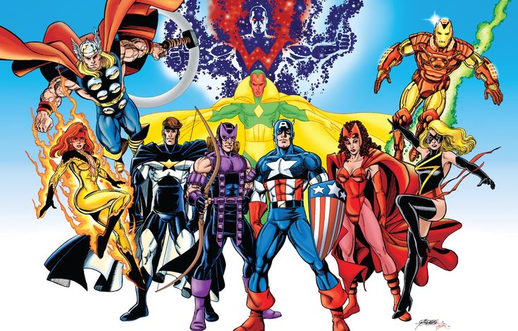

Super Heróis

Super Choque (Virgil Hawkins)
História: Virgil Hawkins é um adolescente que ganha poderes elétricos após ser exposto a uma substância chamada "bang baby" durante um evento de gangues em Dakota City. Ao se tornar o herói Super Choque, ele luta para equilibrar sua vida escolar e suas responsabilidades como vigilante. Super Choque enfrenta vilões como Ebon e o Professor Perigo, enquanto também aborda questões sociais como preconceito e desigualdade. Habilidades: Super Choque tem o poder de gerar e manipular eletricidade de várias formas, incluindo rajadas elétricas, manipulação de campos magnéticos e controle de dispositivos elétricos. Ele pode também voar usando campos magnéticos e tem uma resistência aprimorada ao dano físico devido à sua habilidade de manipulação de energia.

Miles Morales
História: Miles Morales é um jovem de origem latina e afro-americana que vive em uma versão alternativa do Universo Marvel. Ele é picado por uma aranha geneticamente modificada e adquire os poderes do Homem-Aranha. Miles é treinado pelo próprio Peter Parker e se torna o novo Homem-Aranha após a morte de seu mentor no seu universo. Apesar de ser muito jovem, Miles se torna um herói respeitado e é um símbolo de diversidade no universo Marvel. Habilidades: Miles possui habilidades semelhantes às de Peter Parker, incluindo força sobre-humana, agilidade, adesão a superfícies e sentidos aguçados. No entanto, ele tem habilidades únicas, como a habilidade de camuflagem (ficando invisível) e o "venom blast", uma descarga elétrica que pode paralisar ou causar dano a seus inimigos.
Pantera Negra (T'Challa)
História: T'Challa é o rei de Wakanda, uma nação africana fictícia tecnologicamente avançada e rica em Vibranium, o metal mais raro e poderoso do universo Marvel. Ele assume o manto de Pantera Negra após a morte de seu pai, T'Chaka, e se torna o protetor de seu povo. Ao longo de sua jornada, T'Challa lida com questões de política internacional, conflitos familiares e a responsabilidade de manter o segredo de Wakanda, enquanto também enfrenta ameaças como Erik Killmonger e Ulysses Klaue. Habilidades: T'Challa é um atleta altamente treinado e possui habilidades de combate excepcionais, devido à sua experiência militar e treinamento em várias disciplinas de luta. Ele também é aprimorado pelas ervas místicas que conferem ao Pantera Negra força, agilidade, resistência e sentidos aprimorados, além de um reflexo sobre-humano. Seu traje, feito de Vibranium, é praticamente indestrutível e lhe proporciona resistência a ataques e absorção de energia.
Hela
Hela História: Hela é a filha de Loki e a deusa da morte no panteão nórdico, e é uma das vilãs mais poderosas do universo Marvel. Ela governa o reino de Hel, que é o domínio dos mortos. Hela busca expandir seu domínio e conquistar outros reinos, incluindo Asgard. Sua história é marcada por traições e rivalidades familiares, especialmente com seu pai Loki e com seu irmão Thor, com quem tem um intenso confronto. Habilidades: Hela é uma combatente extremamente poderosa e possui uma força sobre-humana imensa. Ela tem a habilidade de manipular a morte, podendo trazer mortos de volta à vida ou controlar os mortos. Hela também pode criar e manipular armas, como lâminas e correntes, e é praticamente imortal, com resistência a danos físicos. Ela tem controle total sobre seu reino, Hel, e pode ressuscitar os mortos para usá-los em sua guerra.
Blade
História: Blade, também conhecido como Eric Brooks, é um híbrido de humano e vampiro, nascido após sua mãe ser mordida por um vampiro enquanto estava grávida. Blade possui as habilidades e força de um vampiro, mas sem suas fraquezas, como a aversão ao sol. Ele dedica sua vida a caçar e exterminar vampiros, especialmente após a morte de sua mãe, que foi causada por uma criatura da noite. Blade é um especialista em combate corpo a corpo e tem uma longa trajetória de batalhas contra vampiros e outras ameaças sobrenaturais. Habilidades: Blade possui força, agilidade, resistência e sentidos aguçados de vampiro, mas não é afetado pela luz do sol, crucifixos ou estacas. Ele é um mestre em combate corpo a corpo e usa uma variedade de armas, como espadas e facas. Sua habilidade de cura acelerada permite que ele se recupere rapidamente de ferimentos. Blade também é imune à maioria das doenças humanas e possui um intelecto aguçado para entender as criaturas sobrenaturais.
Magneto (Erik Lehnsherr)
História: Magneto, um dos vilões mais icônicos da Marvel, é um mutante com o poder de manipular o magnetismo. Erik Lehnsherr foi um sobrevivente do Holocausto, e sua experiência com a opressão e violência levou-o a adotar uma visão radical sobre a relação entre mutantes e humanos. Ele acredita que os mutantes são uma espécie superior e que a dominação dos humanos é inevitável. Magneto é um dos fundadores da Irmandade dos Mutantes e um eterno inimigo dos X-Men, especialmente de Charles Xavier, com quem compartilha uma amizade e uma rivalidade complexas. Habilidades: Magneto tem o poder de controlar campos magnéticos, o que lhe permite manipular metais, gerar campos de força, e até controlar o ferro no sangue das pessoas. Ele é capaz de criar campos de força impenetráveis, levantar grandes objetos, e controlar a eletricidade. Sua habilidade é incrivelmente poderosa, e ele é considerado um dos mutantes mais fortes da Marvel.
Desenvolvedores: Kailane e Leticia
Tecnologias utilizadas no site: Chatgpt